Set up a crew: lead, size, hours, colour, members
In the office app, press Help and type set up a crew
: the tour plays on your own screen, with your own data.
-
 1
1New crew
Opens the crew form.
-
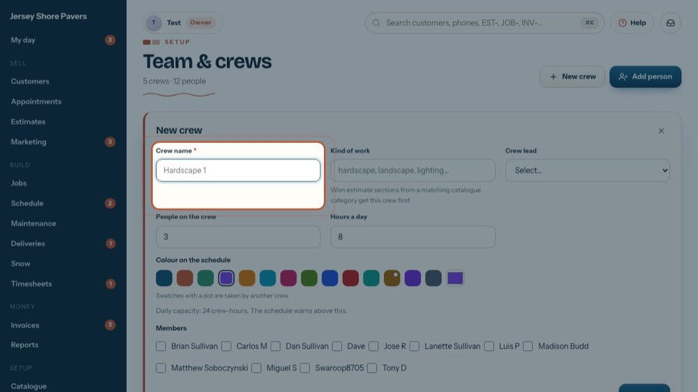
2Crew name
What the schedule calls it, e.g. Hardscape 1. It must be filled in.
-
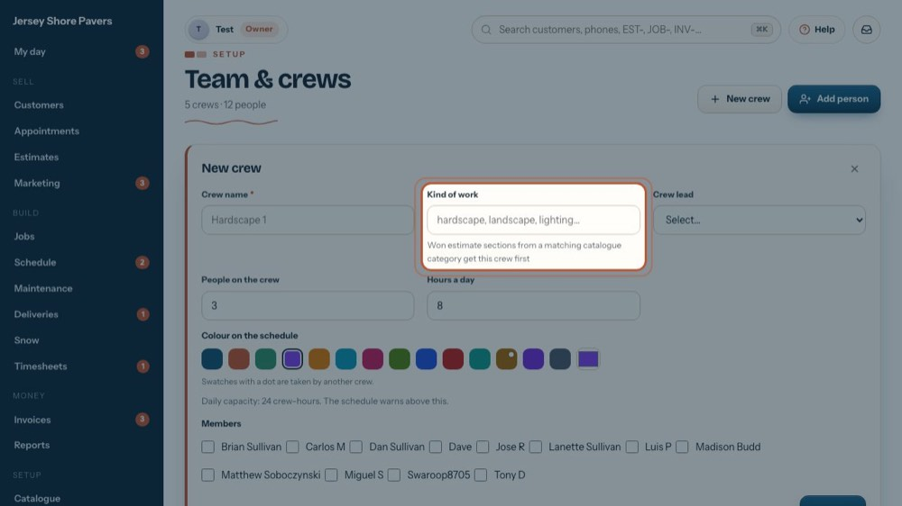
3Kind of work
hardscape, landscape, lighting… Won estimate sections from a matching catalogue category get this crew first. Customer notices in Settings go by it too.
-
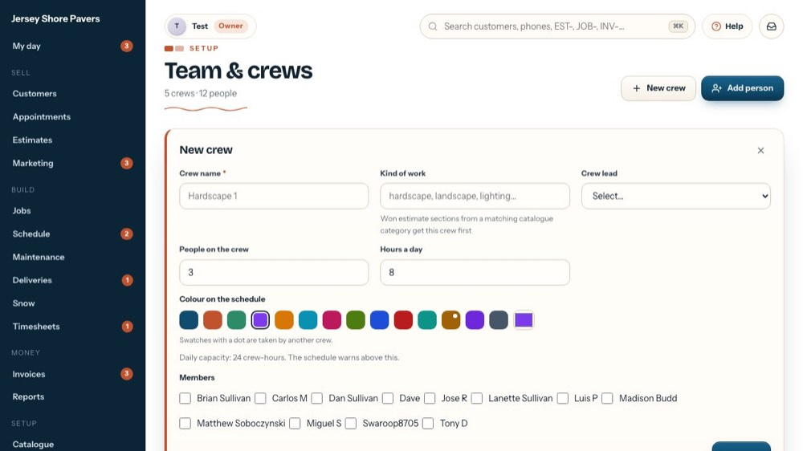
4Crew lead
Who leads it (★). The lead is added to the members when you save.
-
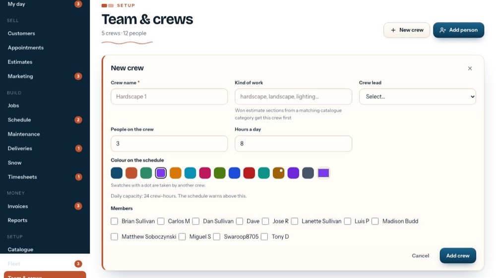
5People on the crew
How many usually work on it.
-
6
Hours a day
Their working day. People × hours = the crew-hours a day; the schedule warns above it. The line under the colours works it out.
-
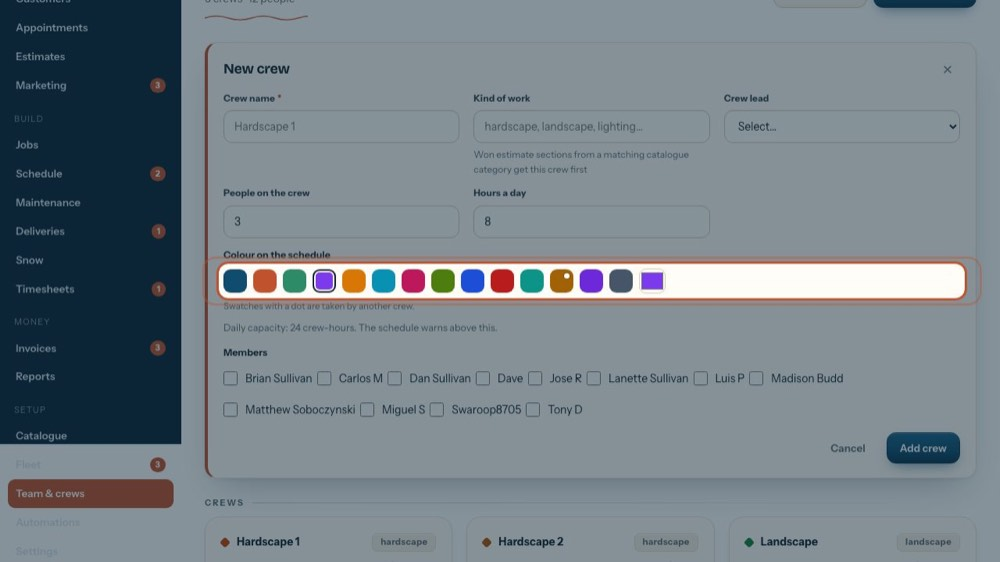
7Colour on the schedule
Each crew gets its own colour. A swatch with a dot is taken by another crew: pick one without a dot so crews look different.
-
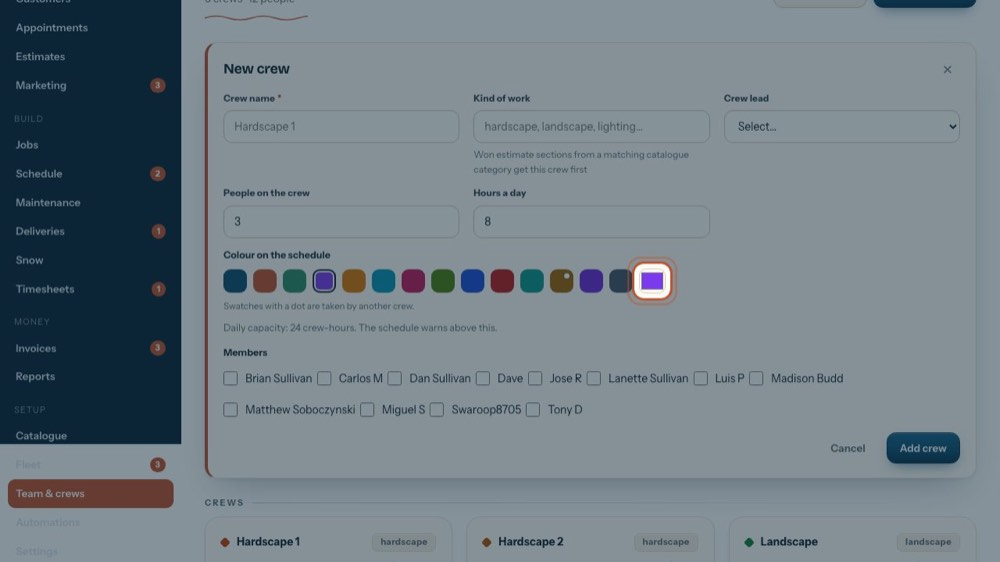
8Any other colour
Or pick any colour here. If it looks like another crew's, a red line says so.
-
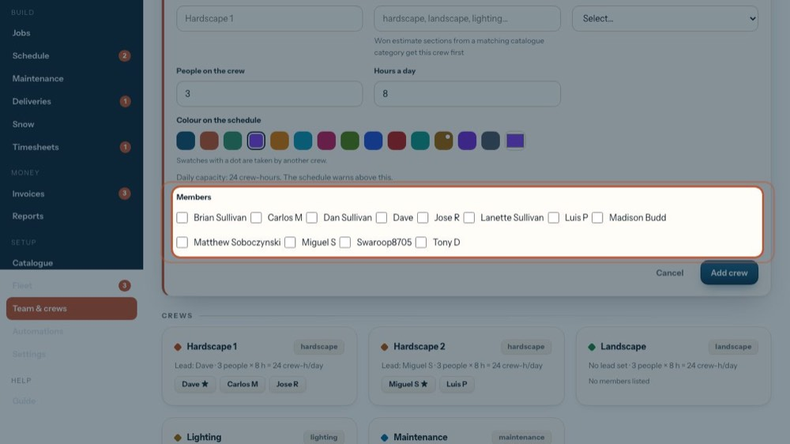
9Members
Tick everyone on the crew.
-
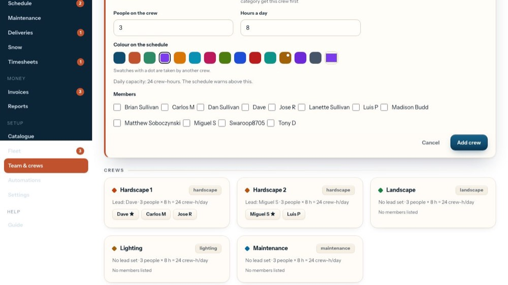
10Add crew
Saves the crew. People and hours a day must be above zero.
-
 11
11Close the form
The tour closes it without saving.
-
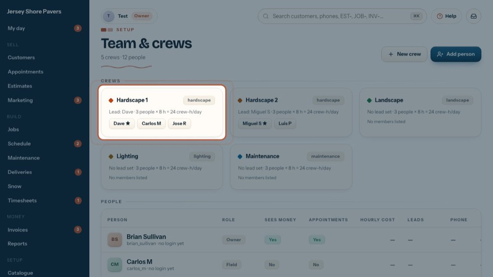
12Change a crew
To change a crew, click its card.
-
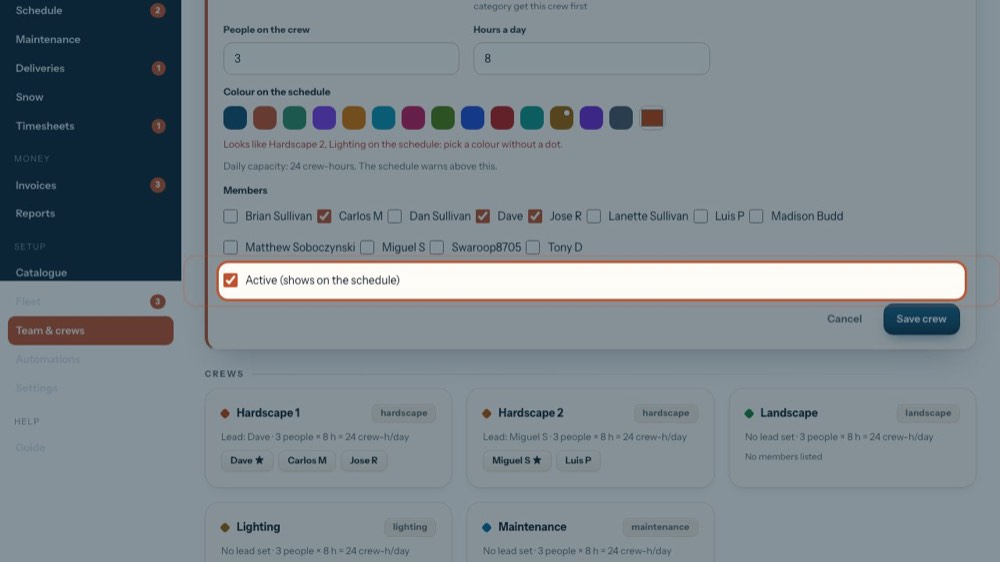
13Active
Untick to take the crew off the schedule without deleting it.
-
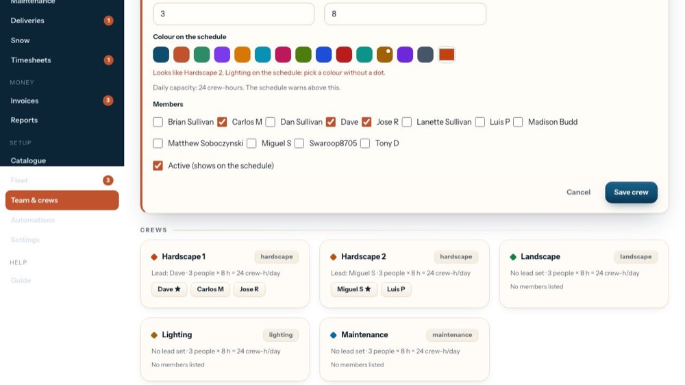
14Save crew
Saves the changes and the member list.
-
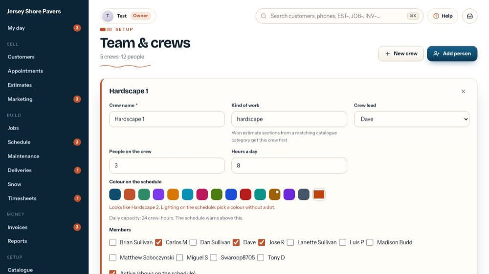
15Close it
The tour closes it without saving.